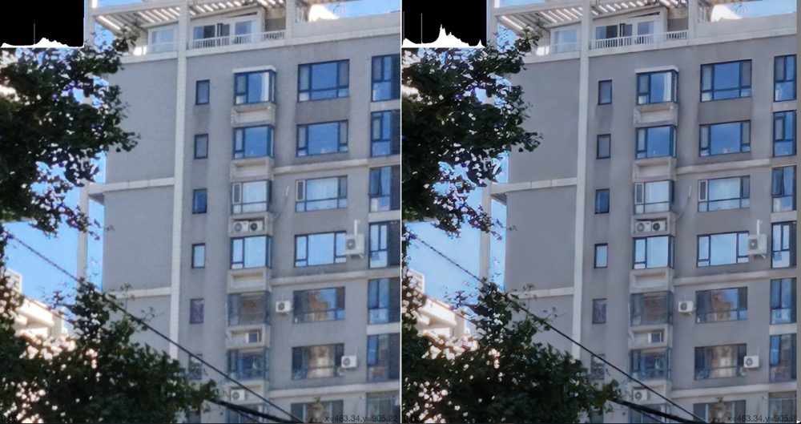
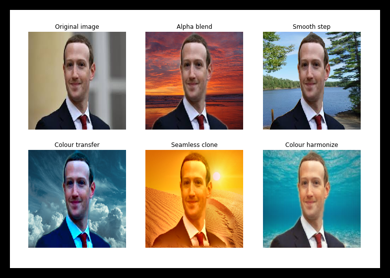

Demos
Selected work — on-device video restoration and a couple of web projects.
Videos load only when you press play.
On-Device Video Processing
Video Quality Enhancement
- Runs at 1080p 60fps or 4K 30fps on Qualcomm Snapdragon 8450 and above, in the raw pipeline.
- Runs at 1080p 60fps or 4K 30fps on Snapdragon 7450 and above, in the YUV pipeline.
- Footage recorded on a Xiaomi Mi 12 (2022).
Input
Output
Video Super Resolution
- Runs at 720p 24fps, upscaling 720p → 1440p, on Qualcomm Snapdragon 8475 and above in the YUV pipeline.
- Footage recorded on an Honor device (2023).

Detail comparison — input (left) versus super-resolved output (right).
Input
Output
Human Segmentation
- Runs at 720p 30fps on Qualcomm Snapdragon 765G and above in the YUV pipeline (2020).

Segmentation masks produced in real time on device.
Frame Interpolation (MEMC)
- Runs at 720p, interpolating 30fps → 60fps, on Qualcomm Snapdragon 8550 and above in the YUV pipeline.
Input · 30 fps
Output · 60 fps
Web Development
Canada Local Chinese Forum
A full-featured online discussion platform built with modern web technologies.
Canada Local Restaurant Website
A food discovery and delivery platform with location-based services.